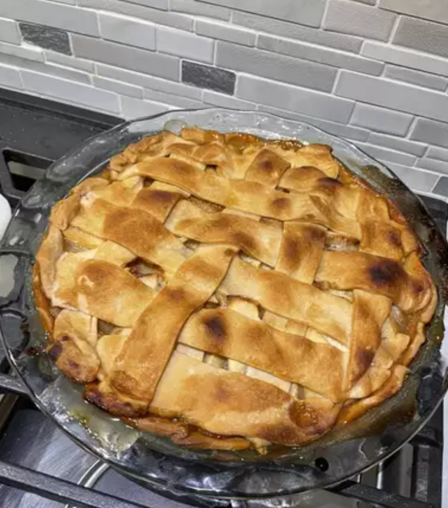

Caramel Apple Pie

Description
A twist on apple pie. The twist is caramel.
Ingridents
- ½ cup white sugar
- ½ cup brown sugar
- 6 tablespoons unsalted butter
- ¼ cup water
- ¼ teaspoon cinnamon
- 1 pinch salt
- 1 pastry for double-crust pie
- 5 apples - peeled, cored and sliced
Steps
- Gather all ingredients.
- Preheat the oven to 425 degrees F (220 degrees C).
- Combine white sugar, brown sugar, butter, water, cinnamon, and salt in a saucepan over medium heat. Bring to a boil, remove from heat, and set aside.
- Roll out half the pastry to fit a 9-inch pie plate. Place bottom crust in pie plate; pour in apple slices.
- Roll out top crust into a 10-inch circle. Cut into 8 (1-inch) wide strips with a sharp paring knife or pastry wheel.
- Weave the pastry strips, one at a time, into a lattice pattern. Fold the ends of the lattice strips under the edge of the bottom crust and crimp to seal.
- Pour butter-sugar mixture over top of pie, coating the lattice, and allowing any remaining sauce to drizzle through the crust.
- Bake in the preheated oven for 15 minutes. Reduce heat to 350 degrees F (175 degrees C), and bake until the crust is golden brown, the caramel on the top crust is set, and the apple filling is bubbling, 35 to 40 more minutes. Allow to cool completely before slicing.